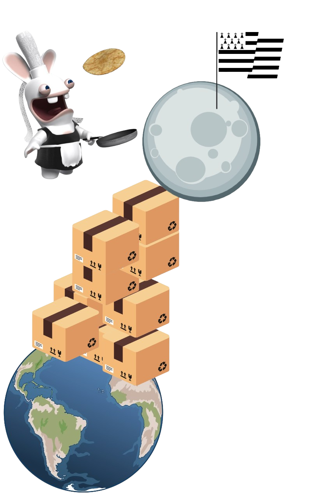

Après avoir vu leurs homologues américains atteindre la lune en empilant des déchets, Gwendoline et Brendan décident de faire de même, mais avec des cartons arborant un joli logo vert, signe de recyclabilité. Ils parcourent ainsi toute la Bretagne, passant par des villes emblématiques comme Quimper, Brest, Plougonvelin et Gouesnou afin de récolter ces précieux cartons.
Cependant, ils sont poursuivis par les lobbyistes du beurre doux, déterminés à contrecarrer leur noble quête. Malgré les embûches, Gwendoline et Brendan persistent dans leur démarche, aspirant à créer une aventure exceptionnelle et durable.